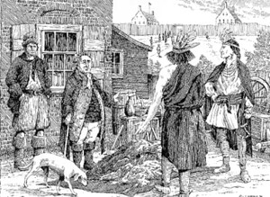

|
 From the beginning, Europeans found procuring the skins of furbearing animals to be the one of the quickest and easiest ways to turn the natural bounty of the North American wilderness into profits and wealth. This premier economic activity was called the "Fur Trade," the "Indian Trade," or simply "the Trade!" Trading posts called Fort Nassau on Castle Island and Fort Orange, in 1614 and 1624 respectively, represented first steps in establishing the Dutch as major participants in the North American fur trade. The Dutch West India Company sought to maintain exclusive control of that enterprise but was unable to enforce its trading monopoly in the face of settlers, company employees, and interlopers - all of whom were determined to pursue pelts for personal profit! In 1652, a core group of these fur traders was able to persuade the governor of New Netherland to create a separate entity within and over the objections of the Van Rensselaers - proprietors of all the land around Fort Orange and the legal contractors of many of those who instead sought to pursue the fur trade on their own. The establishment of the court of Beverwyck recognized the fur trading community and provided a focus for the settlement that was encircled by a stockade later in the decade and which became Albany - a chartered city under the English in 1686. The traders of Beverwyck and then Albany were successful in attracting Native American hunters to the banks of the Hudson to bartered their furs for shiny, brightly-colored, sweet, spirituous, and exotic trade goods which the best capitalized of the traders secured on credit from downriver or overseas. However, most Beverwyck/Albany fur traders had limited access to imported trade goods. To generate desirable trade goods, Albany people baked, brewed, heated and hammered, and sewed items that brought furbearing Indians to the site of Albany during the summer trading season. By 1660, the fur trade out of Beverwyck had become highly competitive with opposing factions petitioning the court for regulation on their behalfs. The establishment of Schenectady, among other things, represented an effort on the part of some frustrated traders to pre-empt the Beverwyck then Albany sense of entitlement. For some, this enterprise proved quite lucrative as a number of New Netherland pioneers amassed fortunes that could be invested in real estate or related trading enterprises. Based on success in the fur trade, a core group established their families in Albany for generations to come! During the 1650s, 60s, and 70s, the so-called "Indian Trade" was highly competitive. Actual Albany residents were challenged by those engaging native hunters in the wilderness beyond Albany and by better-capitalized but wholly unwelcome would-be traders from downriver and from New England. In 1681, a group of traders sought help in regulating the fur trade before the Albany court. After decades of determined hunting, by the 1660s beaver became increasingly scare in what became New York State forcing the Iroquois to venture into New France and the Great Lakes country for pelts. At the same time, the European market for furs leveled off and then declined. Despite the constraints of supply and demand, the fur trade remained an important but no longer exclusive element of the Albany commercial economy for the next hundred years. Over the next century, trading parties went from Albany into the Indian country. Those adventures sometimes proved profitable and other times disastrous. The so-called Macgregorie Expedition of 1687 represents an interesting chapter in that story. The city charter of 1686, gave Albany the singular right to deal with the Indians to the north and west. The English probably intended the provision to have a diplomatic function. However, Albany interpreted it to mean a fur trading monopoly. During the 1690s and early 1700s, the Albany city fathers showed some determination in seeking to enforce Albany's fur trading monopoly as a number of so-called "illegal traders" were brought before the Albany court! Included in that group were obvious outsiders but also city residents who were not born in Albany but who were property holders and visible members of the community. At the same time, as Albany reached its capacity to absorb the more ordinary sons of city families who relocated to Schenectady, Kinderhook, and Catskill - or into surrounding Rensselaerswyck and beyond! Some continued to pursue the fur trade but many others turned to more agriculture-based enterprises. With the establishment of Oswego during the 1720s, the active center of the fur trade moved west with Albany traders keeping stores there and beyond with some Albany people finding their way to Niagara and out in the Great Lakes region (Detroit). These outposts typically were manned by younger sons of established Albany families. With greater Albany County filling up with new settlers following the end of hostilities with the French, the leading Albany merchants focused more and more on servicing a European-ancestry clientele as British settlement restrictions sought to close off the West to the colonists. By that time, the fur trade was in trouble and Albany business people turned to the British for help. In 1764, a large number of Albany-based merchants and traders petitioned the royal government for more regulation of the fur trade. This essay is intended to describe early Albany's most important economic activity. At this point, it is only an entry page and is very much in-progress. In time, this page will provide access to information about the mechanics of the fur trade, its place in the early Albany economy, and will suggest sources for further study. Please be patient! This drawing of a fur trading scene set on upper Maiden Lane in 1686 was made by Len Tantillo in 1985 for a Tricentennial Program. Portraying the negotiation between Native American hunter/traders and Albany merchants outside of a house on upper Maiden Lane and in the open space below the Albany fort, we believe it is the most telling and accurate depiction of the most important economic activity of Albany's first years. ". . . skins of furbearing animals" is a term of convenience used to describe the commodity European traders were so anxious to obtain and export. At that time, it could mean many things! It refers first to beaver - the most desirable of the readily obtainable furs - and in-demand in Europe for hats, coats, and finery. But virtually all other furbearing animals were hunted as well. It also refers to cleaned but not processed skins. The hides of deer and farm animals were used to make leather - a staple of the early Albany production economy. Sources:The most useful books on the colonial fur trade are: Oliver Rink's Holland on the Hudson, which provides access to earlier works; Alan Trelease, Indian Affairs in Colonial New York: The Seventeenth Century (Ithaca, 1960, reprinted 1971), a seminal study; Thomas E. Burke, Jr., Mohawk Frontier; and Thomas E. Norton, The Fur Trade in Colonial New York. All these deal with Albany but in a larger perspective. The only serious study of the Albany fur trade was produced by David A. Armour in 1965. The beginnings of an answer to "what happened to the fur trade?", can be found in Walter S. Dunn, People of the American Frontier: The Coming of the Revolution (Westport CT, 2005) partially online, which is set in the Indian Country from Oswego to the west. The business of a number of Albany traders (and their kin) during and after the Seven Years War is considered with Henry Van Schaack as a central character - a dimension not readily visible from within the community-based record. first posted 1/10/01; last revised 9/4/15 |